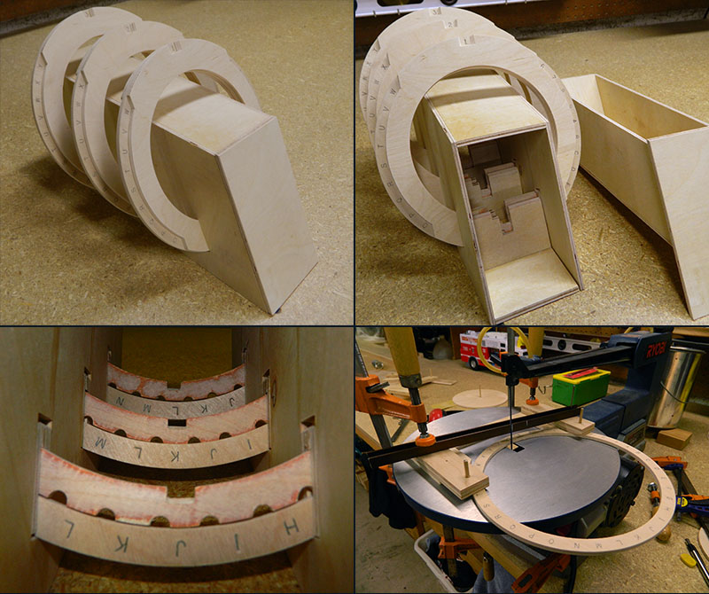
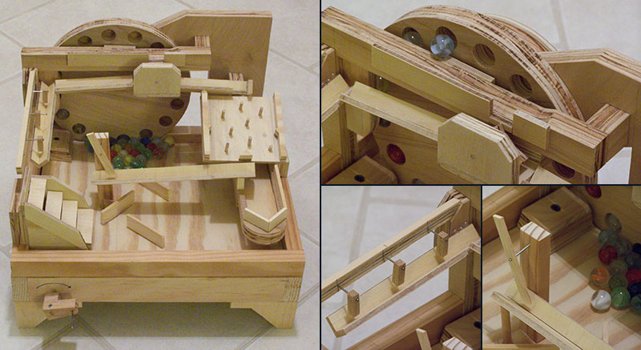

Pipe Organ #2
After building my first test pipe organ, I deciding to start work on a more elaborate one. While still unfinished, it currently stands a little over 7 feet (2.1 meters) tall, and has 41 keys. For pipework, this organ has a single 4 foot open diapason rank (meaning, the largest pipe if 4 feet tall).

Rotary Lockbox
This is a wooden lockbox I designed. It uses three spinning combination rings to lock and unlock a sliding drawer. Each ring can be set by pinning a secondary inner ring to the outer character ring. When completed, this box will also have a secret compartment.

Marble Machine
This marble machine was inspired by those built by Matthias Wandel. It uses as rotating wheel with slanted holes to elevate and release the marbles.
© 2012 Brendan Whitfield